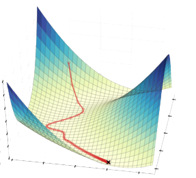

Gradient Descent
Gradient Descent
We will consider the general following problem: Given a function \(f: \mathbb{R}^d \to \mathbb{R}\), we want to find a vector \(\hat{\mathbf{x}} \in \mathbb{R}^d\) that approximately minimizes \(f\). That is, we want \(\hat{\mathbf{x}}\) such that \[\begin{align*} f(\hat{\mathbf{x}}) \leq \min_{\mathbf{x}} f(\mathbf{x}) + \epsilon \end{align*}\] for some small constant \(\epsilon\).
The problem is at the core of machine learning. Typically, the function \(f\) is a loss function that measures how well a model fits the data. The goal is to find parameters \(\hat{\mathbf{x}}\) that achieve small loss.
Least Squares Regression Example
As an example, we’ll consider least squares regression where we fit the data with a linear model and the loss function is the \(\ell_2\)-norm. Consider \(n\) data points \(\mathbf{a}^{(1)}, \ldots, \mathbf{a}^{(n)} \in \mathbb{R}^d\) with corresponding labels \(y^{(1)}, \ldots, y^{(n)} \in \mathbb{R}\). We will consider the linear model \(\mathbf{x}^\top \mathbf{a}\) where \(\mathbf{x}\) is the parameter vector. The loss function is given by \[\begin{align*} f(\mathbf{x}) = \sum_{i=1}^n (\mathbf{x}^\top \mathbf{a}^{(i)} - y^{(i)})^2 = \| \mathbf{A x} - \mathbf{y} \|_2^2. \end{align*}\] In the last expression, we used compact linear algebra notation where the data matrix \(\mathbf{A} \in \mathbb{R}^{n \times d}\) has rows \(\mathbf{a}^{(i)}\) and the label vector \(\mathbf{y} \in \mathbb{R}^n\) has entries \(y^{(i)}\).
Determining how to find the best parameters \(\mathbf{x}\) is a fundamental problem in machine learning. The choice of algorithm depends on the form of the function \(f\) (e.g. linear, quadratic, finite sum structure) and additional constraints on the parameters.
Gradient descent is a greedy algorithm for minimizing a function of multiple variables that often works amazingly well in practice. The algorithm iteratively updates the parameters \(\mathbf{x}\) by moving in the direction of steepest descent. In this way, the algorithm hopefully decreases the function at each iteration.

Before we analyze gradient descent, we’ll review some calculus.
Calculus Review
For \(i \in \{1, \ldots, d\} = [d]\), let \(x_i\) be the \(i\)th entry of \(\mathbf{x}\). We will use \(\mathbf{e}^{(i)}\) to denote the \(i\)th standard basis vector with 0s everywhere except for a 1 in the \(i\)th entry.
Recall the partial derivative of a function \(f: \mathbb{R}^d \to \mathbb{R}\) with respect to the \(i\)th variable is given by
\[\begin{align*} \frac{\partial f}{\partial x_i} (\mathbf{x}) = \lim_{t \to 0} \frac{f(\mathbf{x} + t \mathbf{e}^{(i)}) - f(\mathbf{x})}{t}. \end{align*}\]
The directional derivative of \(f\) in the direction \(\mathbf{v} \in \mathbb{R}^d\) is given by \[\begin{align*} D_{\mathbf{v}} f(\mathbf{x}) = \lim_{t \to 0} \frac{f(\mathbf{x} + t \mathbf{v}) - f(\mathbf{x})}{t}. \end{align*}\]
In this notation, the partial derivative is the directional derivative in the direction of the \(i\)th standard basis vector. That is, \(\frac{\partial f}{\partial x_i}(\mathbf{x}) = D_{\mathbf{e}^{(i)}} f(\mathbf{x})\).
We are interested not just in the partial derivative of the function with respect to one variable but the gradient of the function with respect to all variables.
The gradient of \(f\) is the vector of partial derivatives \[\begin{align*} \nabla f(\mathbf{x}) = \begin{bmatrix} \frac{\partial f}{\partial x_1}(\mathbf{x}) \\ \vdots \\ \frac{\partial f}{\partial x_d}(\mathbf{x}) \end{bmatrix}. \end{align*}\]
With this notation, we can write the directional derivative as \[\begin{align*} D_\mathbf{v} f(\mathbf{x}) = \nabla f(\mathbf{x})^\top \mathbf{v}. \end{align*}\] While not immediately obvious, the proof is straightforward and can be found here.
When we solve the problem of minimizing the function \(f\), we need a way of accessing \(f\). We generally have a function oracle which evaluates \(f(\mathbf{x})\) for any \(\mathbf{x}\) and a gradient oracle which evaluates \(\nabla f(\mathbf{x})\) for any \(\mathbf{x}\). We say access to the function oracle gives zeroth-order information and access to the gradient oracle gives first-order access. We view the implementation of these oracles as a black box. However, computing the function value and gradient can be computationally expensive.
Computational Cost for Least Squares Regression Let’s consider the computational cost of evaluating the oracles for the least squares regression problem. When \(f(\mathbf{x}) = \| \mathbf{A x} - \mathbf{y} \|_2^2\), the function oracle requires computing a matrix-vector product and a vector-vector addition. Since \(\mathbf{A} \in \mathbb{R}^{n \times d}\) and \(\mathbf{x} \in \mathbb{R}^d\), the matrix-vector product costs \(O(nd)\) operations. Since \(\mathbf{A x} \in \mathbb{R}^n\) and \(\mathbf{y} \in \mathbb{R}^n\), the vector-vector addition costs \(O(n)\) operations. So the total cost of the function evaluation is \(O(nd)\).
In order to compute the cost of the gradient, let’s compute the gradient for the least squares regression problem.
Recall we can write
\[\begin{align*} f(\mathbf{x}) \sum_{i=1}^n (\mathbf{x}^\top \mathbf{a}^{(i)} - y^{(i)})^2 \end{align*}\]
so, by the chain rule, the partial derivative is given by
\[\begin{align*} \frac{\partial f}{\partial x_j} (\mathbf{x}) &= \sum_{i=1}^n 2 (\mathbf{x}^\top \mathbf{a}^{(i)} - y^{(i)}) \frac{\partial}{\partial x_j} (\mathbf{x}^\top \mathbf{a}^{(i)} - y^{(i)}) \\ &= \sum_{i=1}^n 2 a_j^{(i)} (\mathbf{x}^\top \mathbf{a}^{(i)} - y^{(i)}) \\ &= 2 \mathbf{A}_j^\top (\mathbf{A x} - \mathbf{y}) \end{align*}\] where \(\mathbf{A}_j\) is the \(j\)th column of \(\mathbf{A}\).
Then the gradient is given by \(\nabla f(\mathbf{x}) = 2 \mathbf{A}^\top (\mathbf{A x} - \mathbf{y})\). We can compute \(\mathbf{A x} - \mathbf{y} \in \mathbb{R}^n\) with \(O(nd)\) operations. Then, to get the full gradient, we compute \(\mathbf{A}^\top (\mathbf{A x} - \mathbf{y}) \in \mathbb{R}^d\) with \(O(n^2 d)\) operations since \(\mathbf{A}^\top \in \mathbb{R}^{d \times n}\). So the total cost of the gradient evaluation is \(O(n^2 d)\).
Algorithm
Let’s consider the general gradient descent algorithm. The key idea is to iteratively update the parameters \(\mathbf{x}\) by making a small adjustment that decreases \(f(\mathbf{x})\). In particular, we will update \(\mathbf{x} \gets \mathbf{x} + \eta \mathbf{v}\) where \(\eta > 0\) is the step size.
In order to determine how we should set \(\mathbf{v}\), we will consider the case when \(\eta\) is small. In this case, we can approximate \[\begin{align*} f(\mathbf{x} + \eta \mathbf{v}) - f(\mathbf{x}) \approx D_\mathbf{v} f(\mathbf{x}) \eta = \nabla f(\mathbf{x})^\top \mathbf{v} \eta. \end{align*}\] In order to decrease \(f(\mathbf{x})\), we want to choose \(\mathbf{v}\) such that \(\nabla f(\mathbf{x})^\top \mathbf{v}\) is as negative as possible. Recall the inner product is maximized when the vectors are parallel so we set \(\mathbf{v} = -\nabla f(\mathbf{x})\). Then \[\begin{align*} f(\mathbf{x} + \eta \mathbf{v}) - f(\mathbf{x}) \approx -\nabla f(\mathbf{x})^\top \nabla f(\mathbf{x}) \eta = -\| \nabla f(\mathbf{x}) \|_2^2 \eta. \end{align*}\]
Let’s formalize the gradient descent algorithm. We will initialize \(\mathbf{x}^{(0)} \in \mathbb{R}^d\) to some initial point. For each iteration \(t \in [T]\), we will compute the gradient \(\nabla f(\mathbf{x}^{(t)})\). Then we will update the parameters by setting \(\mathbf{x}^{(t+1)} = \mathbf{x}^{(t)} - \eta \nabla f(\mathbf{x}^{(t)})\). Finally, we return the best parameters \(\hat{\mathbf{x}} = \arg \min_{t \in [T]} \mathbf{x}^{(t)}\).
Notice we need to choose the step size parameter \(\eta\) and the number of iterations \(T\).
Today, we’ll show that if \(f\) is a convex function, then gradient descent converges to a near global minimum when the step size \(\eta\) is small and the number of iterations \(T\) is large. Formally, \[\begin{align*} f(\hat{\mathbf{x}}) \leq f(\mathbf{x}^*) + \epsilon \end{align*}\] where \(\mathbf{x}^*\) is a global minimum of \(f\). Examples of convex functions include least squares reduction, logistic regression, kernel regression, and support vector machines.
Gradient descent also works for non-convex function but the convergence guarantees are not as strong. In particular, gradient descent will converge to a near stationary point. Formally, \[\begin{align*} \| \nabla f(\mathbf{x}^{(T)}) \|_2 \leq \epsilon. \end{align*}\] Examples of non-convex functions include neural networks, matrix completion, and mixture models.
Iteration Complexity
For machine learning applications, we are primarily interested in how fast gradient descent converges. We will be able to bound the iteration complexity if we make some assumptions on the function \(f\). As usual, the stronger the assumptions we can make, the better bounds we can get.
We will start by assuming that \(f\) is convex. A function \(f\) is convex if and only if for all \(\mathbf{x}, \mathbf{y} \in \mathbb{R}^d\) and \(\lambda \in [0, 1]\), we have \[\begin{align*} (1-\lambda) f(\mathbf{x}) + \lambda f(\mathbf{y}) \geq f((1-\lambda) \mathbf{x} + \lambda \mathbf{y}). \end{align*}\]
In words, every line between two points on the function is above the function.
Equivalently, the tangent line at any point is below the function. In mathematical notation, we can express the tangent line constraint as \[\begin{align*} f(\mathbf{x + z}) \geq f(\mathbf{x}) + \nabla f(\mathbf{x})^\top \mathbf{z} \end{align*}\] for all \(\mathbf{x}, \mathbf{z} \in \mathbb{R}^d\). By setting \(\mathbf{z} = \mathbf{y} - \mathbf{x}\), we can rewrite the constraint as \[\begin{align*} f(\mathbf{x} + \mathbf{y} - \mathbf{x}) &\geq f(\mathbf{x}) + \nabla f(\mathbf{x})^\top (\mathbf{y} - \mathbf{x}) \\ &=f(\mathbf{x}) - \nabla f(\mathbf{x})^\top (\mathbf{x} - \mathbf{y}). \end{align*}\] Rearranging, we get \[\begin{align*} f(\mathbf{x}) - f(\mathbf{y}) \leq \nabla f(\mathbf{x})^\top (\mathbf{x} - \mathbf{y}). \end{align*}\] We will use this inequality in the analysis of the convergence rate of gradient descent.
Another assumption we will make on the function \(f\) is that \(G\)-Lipschitz. Formally, \(f\) is \(G\)-Lipschitz if, for all \(\mathbf{x}\), \(\| \nabla f(\mathbf{x}) \|_2 \leq G\). This means that the function \(f\) cannot change too quickly.
For our analysis of gradient descent, we will assume that \(f\) is convex, \(f\) is \(G\)-Lipschitz, and our starting point \(\mathbf{x}^{(0)}\) is within \(R\) of the global minimum \(\mathbf{x}^*\).
Gradient Descent Convergence Bound: If we run gradient with step size \(eta =\frac{R}{G \sqrt{T}}\) for \(T \geq \frac{R^2 G^2}{\epsilon^2}\) iterations, then \(f(\hat{\mathbf{x}}) \leq f(\mathbf{x}^*) + \epsilon\).
Intuitively, the proof is tricky because the iterates do not necessarily decrease monotonically. We will prove that the average iterate gives a good solution and, therefore, the best iterate must also give a good solution.
We will first prove an intermediate result that if the function value is far from the global minimum, then we take a large step towards the global minimum. This property is intuitively useful because it means that we make good progress towards the global minimum even when we are far way.
Consider the difference between the next iterate and the global minimum \[\begin{align*} \| \mathbf{x}^{(t+1)} - \mathbf{x}^* \|_2^2 &= \| \mathbf{x}^{(t)} - \eta \nabla f(\mathbf{x}^{(t)}) - \mathbf{x}^* \|_2^2 \\ &= \| (\mathbf{x}^{(t)} - \mathbf{x}^*) - \eta \nabla f(\mathbf{x}^{(t)}) \|_2^2 \\ &= \| \mathbf{x}^{(t)} - \mathbf{x}^* \|_2^2 - 2 \eta \nabla f(\mathbf{x}^{(t)})^\top (\mathbf{x}^{(t)} - \mathbf{x}^*) + \eta^2 \| \nabla f(\mathbf{x}^{(t)}) \|_2^2 \\ &\leq \| \mathbf{x}^{(t)} - \mathbf{x}^* \|_2^2 - 2 \eta \nabla f(\mathbf{x}^{(t)})^\top (\mathbf{x}^{(t)} - \mathbf{x}^*) + \eta^2 G^2 \end{align*}\] where the third equality followed because the squared \(\ell_2\) norm is an inner product and the inequality followed by the \(G\)-Lipschitz assumption. Dividing by \(2 \eta\) and rearranging, we get \[\begin{align*} \nabla f(\mathbf{x}^{(t)})^\top (\mathbf{x}^{(t)} - \mathbf{x}^*) \leq \frac{\| \mathbf{x}^{(t)} - \mathbf{x}^* \|_2^2 - \| \mathbf{x}^{(t+1)} - \mathbf{x}^* \|_2^2}{2 \eta} + \frac{\eta G^2}{2}. \end{align*}\]
By convexity, it follows that \[\begin{align*} f(\mathbf{x}^{(t)}) - f(\mathbf{x}^*) \leq \frac{\| \mathbf{x}^{(t)} - \mathbf{x}^* \|_2^2 - \| \mathbf{x}^{(t+1)} - \mathbf{x}^* \|_2^2}{2 \eta} + \frac{\eta G^2}{2}. \end{align*}\]
The next step is to consider the average difference between the iterates and the global minimum \[\begin{align*} \sum_{t=0}^{T-1} f(\mathbf{x}^{(t)} - f(\mathbf{x}^*) &\leq \frac{\| \mathbf{x}^{(0)} - \mathbf{x}^* \|_2^2 - \| \mathbf{x}^{(1)} - \mathbf{x}^* \|_2^2}{2 \eta} + \frac{\eta G^2}{2} \\ &+\frac{\| \mathbf{x}^{(1)} - \mathbf{x}^* \|_2^2 - \| \mathbf{x}^{(2)} - \mathbf{x}^* \|_2^2}{2 \eta} + \frac{\eta G^2}{2} \\ &+ \ldots + \\ &+ \frac{\| \mathbf{x}^{(T-1)} - \mathbf{x}^* \|_2^2 - \| \mathbf{x}^{(T)} - \mathbf{x}^* \|_2^2}{2 \eta} + \frac{\eta G^2}{2}. \end{align*}\] The expression is a telescoping sum because some terms cancel out. Then we can bound the average as \[\begin{align*} \frac1{T} \sum_{t=0}^{T-1} f(\mathbf{x}^{(t)} - f(\mathbf{x}^*) &\leq \frac{\| \mathbf{x}^{(0)} - \mathbf{x}^* \|_2^2 - \| \mathbf{x}^{(T)} - \mathbf{x}^* \|_2^2}{2 T \eta} + \frac{\eta G^2}{2} \\ &\leq \frac{R^2 - 0}{2 T \eta} + \frac{\eta G^2}{2} \\ &= \frac{R^2 G \sqrt{T} }{2 T R} + \frac{R G^2}{2 G \sqrt{T}} = \frac{R G}{\sqrt{T}} \epsilon^2. \end{align*}\] The second inequality used that \(\mathbf{x}^{(0)}\) is within \(R\) of the global minimum \(\mathbf{x}^*\) and that \(\| \cdot \|_2^2\) is non-negative. The first equality followed by plugging in the step size \(\eta = \frac{R}{G \sqrt{T}}\). The second equality followed by plugging in the number of iterations \(T= \frac{R^2 G^2}{\epsilon^2}\).
For the final step, we will consider the average function values of the iterates. Then we can bound the difference between the average iterate and the global minimum as \[\begin{align*} \frac1{T} \sum_{t=0}^{T-1} f(\mathbf{x}^{(t)}) - f(\mathbf{x}^*) \leq \epsilon. \end{align*}\] It must be that the best iterate gives a solution that is at least as good as the average. Then \[\begin{align*} f(\hat{\mathbf{x}}) \leq \frac1{T} \sum_{t=0}^{T-1} f(\mathbf{x}^{(t)}) \leq f(\mathbf{x}^*) + \epsilon \end{align*}\] as desired.
It may appear that the bound is not particularly useful because we need to know the right learning rate. In practice, we can run gradient descent several times with different learning rates and choose the best parameters.
Projected Gradient Descent
We so far assumed that the parameters \(\mathbf{x}\) are unconstrained. However, in many applications, we have additional constraints on the parameters. We may have:
A regularization constraint that \(\| \mathbf{x} \|_2\) is small. This is common in machine learning applications where we want to avoid overfitting.
A positivity constraint that \(\mathbf{x} \geq 0\). This is common in applications where the parameters correspond to real world quantities that cannot be negative.
A linear constraint that \(\mathbf{M x} \leq \mathbf{b}\). This is common in training support vector machines, industrial optimization, and subroutines in integer programming.
Today, we will consider the case where the parameters \(\mathbf{x}\) are constrained to be inside a convex set \(\mathcal{S}\). Notice we are now using the term convex in two different ways: a function is convex if it satisfies the tangent line constraint and a set is convex if the line between any two points in the set is in the set.
We can check visually that the set \(\mathcal{S}\) is convex by drawing a line between any two points in the set and verifying that the line is in the set.
For example, the set on the left is convex but the set on the right is not convex.
Formally, a set \(\mathcal{S}\) is convex if for any \(\mathbf{x}, \mathbf{y} \in \mathcal{S}\) and \(\lambda \in [0,1]\), we have \[\begin{align*} (1- \lambda) \mathbf{x} + \lambda \mathbf{y} \in \mathcal{S}. \end{align*}\]
The challenge for gradient descent is that even if we start with an initial point \(\mathbf{x}^{(0)} \in \mathcal{S}\), there is no guarantee that the next iterate \(\mathbf{x}^{(0)} - \eta \nabla f(\mathbf{x}^{(0)})\) will be in \(\mathcal{S}\).
We will consider an extremely simple modification: We force the next iterate to be in \(\mathcal{S}\) by projecting it onto \(\mathcal{S}\). In order to do this, we will need a third oracle for projections that returns \[\begin{align*} P_{\mathcal{S}} (\mathbf{x}) = \arg \min_{\mathbf{y} \in \mathcal{S}} \| \mathbf{x} - \mathbf{y} \|_2^2. \end{align*}\]
Projected gradient descent is a simple modification of gradient descent. Instead of setting the next iterate to \[\begin{align*} x^{(t+1)} = x^{(t)} - \eta \nabla f(x^{(t)}),,,, \end{align*}\] we set the next iterate to \[\begin{align*} x^{(t+1)} = P_{\mathcal{S}} (x^{(t)} - \eta \nabla f(x^{(t)})). \end{align*}\]
The analysis for projected gradient descent is almost identical to the analysis for gradient descent. We just need one additional claim that, for any \(\mathbf{y} \in \mathcal{S}\), \[\begin{align*} \| \mathbf{y} - P_{\mathcal{S}} (\mathbf{x}) \|_2^2 \leq \| \mathbf{y} - \mathbf{x} \|_2^2. \end{align*}\]
We then argue that \[\begin{align*} f(\mathbf{x}^{(t)}) - f(\mathbf{x}^*) &\leq \frac{\| \mathbf{x}^{(t)} - \mathbf{x}^* \|_2^2 - \| \mathbf{x}^{(t)} - \eta \nabla f(\mathbf{x}^{(t)}) - \mathbf{x}^* \|_2^2}{2 \eta} + \frac{\eta G^2}{2} \\ &\leq \frac{\| \mathbf{x}^{(t)} - \mathbf{x}^* \|_2^2 - \| \mathbf{x}^{(t+1)} - \mathbf{x}^* \|_2^2}{2 \eta} + \frac{\eta G^2}{2}. \end{align*}\] The rest of the analysis follows as before.
The bounds we showed for gradient descent and projected gradient descent have a \(1/\epsilon^2\) dependence. Since we care about the approximation, we would ideally likely a \(1/\epsilon\) or even \(\log(1/\epsilon)\) dependence. Similarly, we would like to reduce or eliminate the dependence on the Lipschitz constant \(G\) and the radius \(R\). Unfortunately, in order to improve the bounds, we need to make stronger assumptions on the function \(f\).